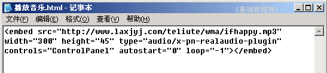
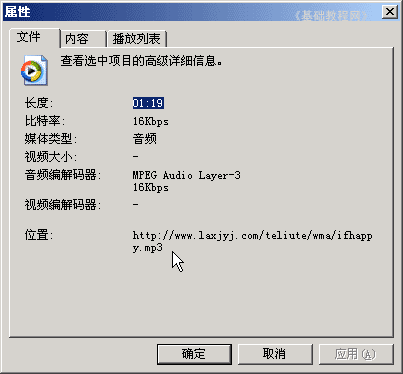
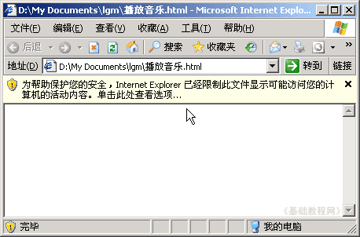
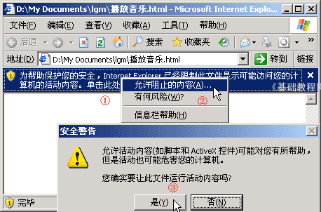

HTML 基础入门教程
五、播放音乐 返回
前面我们学习的是文字效果，这一节来学习播放音乐，音乐一般用embed标签，下面我们来看一个练习；
1、启动记事本
1）点击“开始－所有程序－附件－记事本”；
2）记事本的窗口主要包括标题栏、菜单栏、工作区，左上角有一个一闪一闪的光标插入点竖线；

3）点菜单“文件－保存”命令，以“播放音乐.html”为文件名，类型为“所有文件”，保存文件到自己的文件夹，注意文件名后缀为英文字母；
2、输入内容
1）在工作区中输入下列内容，输入的时候细心，看清英文字母：

<embed src="http://teliute.org/wma/ifhappy.mp3"
width="300" height="45" type="audio/x-pn-realaudio-plugin"
controls="ControlPanel" autostart="0" loop="-1"></embed>
这儿的src标后面是音乐地址，autostart是自动开始，loop是循环，如果要隐藏播放器，可以加一个hidden="-1"，或者简单的把宽度和高度设为"0"；
2）音乐必须是发到网上的有效链接地址，得到音乐地址的方法是，在播放器上敲右键，选“属性”命令，复制中间最长的；

3）按Ctrl＋S组合键保存一下文件，在自己的文件夹中找到“播放音乐”文件，双击打开，看一下页面效果；
如果提示“安全警报”，点一下黄色的安全条，选“允许阻止的内容”，然后点击播放按钮即可；
 
如果音乐不能播放，提示错误或“准备就绪”，就换一个有效的音乐地址；
注意：如果不能上网，则按下列操作：
1）把本课文件夹中的 ifhappy 文件复制到自己的文件夹中，
2）把代码中第一行改成 <embed src="ifhappy.mp3"
本节学习了播放音乐的基本方法，如果你成功地完成了练习，请继续学习下一课内容；
本教程由86团学校TeliuTe制作|著作权所有
基础教程网：http://teliute.org/
美丽的校园……
转载和引用本站内容，请保留版权信息和本站链接。